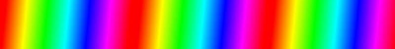
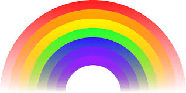

Rainbows are formed when light from the sun is scattered by water droplets (e.g. raindrops or fog) through a process called refraction. Refraction occurs when the light from the sun changes direction when passing through a medium denser than air, such as a raindrop.
According to legend, leprechauns found the abandoned gold and buried it again so no human could ever find it. The old folktales tell us that there is a pot of gold hidden where the end of any rainbow touches the earth.
Why are there so manySongs about rainbows
And what's on the other side?
- Kermit the Frog